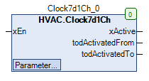
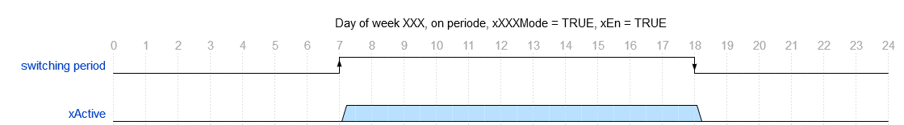
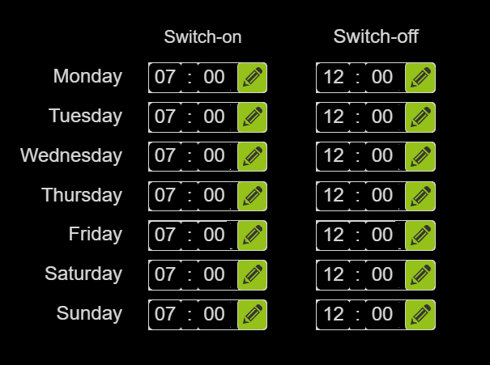

Clock7d1Ch (FB)¶
FUNCTION_BLOCK Clock7d1Ch
Short Description¶
7 weekday time switch, one switch-on / switch-off points in time and a binary total output.The mode of operation (switch-on period or switch-off period) can be defined per weekday.Typical application: Defining the night / day operation of a zone temperature control
Portrayal¶

Interfaces¶
Inputs¶
Name Datatype
Range
Init-Value
Functional Description
xEn BOOL Enable input
Outputs¶
Name Datatype
Range
Init-Value
Functional Description
xActive BOOL Current Switching periods
todActivatedFrom TOD Switch-on point in time of the current weekday
todActivatedTo TOD Switch-off point in time of the current weekday
Setpoints / Parameters¶
Name Datatype
Range
Init-Value
Functional Description
todMonFrom TOD TOD#07:00 Switch-on point in time - Monday
todMonTo TOD TOD#12:00 Switch-off point in time - Monday
xMonMode BOOL TRUE Mode - Switching periods - Monday
todTueFrom TOD TOD#07:00 Switch-on point in time - Tuesday
todTueTo TOD TOD#12:00 Switch-off point in time - Tuesday
xTueMode BOOL TRUE Mode - Switching periods - Tuesday
todWedFrom TOD TOD#07:00 Switch-on point in time - Wednesday
todWedTo TOD TOD#12:00 Switch-off point in time - Wednesday
xWedMode BOOL TRUE Mode - Switching periods - Wednesday
todThuFrom TOD TOD#07:00 Switch-on point in time - Thursday
todThuTo TOD TOD#12:00 Switch-off point in time - Thursday
xThuMode BOOL TRUE Mode - Switching periods - Friday
todFriFrom TOD TOD#07:00 Switch-on point in time - Friday
todFriTo TOD TOD#12:00 Switch-off point in time - Friday
xFriMode BOOL TRUE Mode - Switching periods - Friday
todSatFrom TOD TOD#07:00 Switch-on point in time 1 - Saturday
todSatTo TOD TOD#12:00 Switch-off point in time - Saturday
xSatMode BOOL TRUE Mode - Switching periods - Saturday
todSunFrom TOD TOD#07:00 Switch-on point in time - Sunnday
todSunTo TOD TOD#12:00 Switch-off point in time - Sunnday
xSunMode BOOL TRUE Mode - Switching periods - Sunday
sNotice STRING ‘Notice’ Designation - Time switch
Functional Description¶
General¶
Weekdays 1 - 7 (Monday ... Sunday, XXX = Mon, Tue, Wed, Thu, Fri, Sat, Sun)¶
Special case 1: Switch-on point in time= Switch-off point in time = TOD#00:00
Special case 1: Switch-on point in time= Switch-off point in time = TOD#23:59
Prerequisite for the use of the function block Clock7d1Ch
Switch-on periods¶

Enabling input xEN¶
xEn xActive todActivatedFrom todActivatedTo Note
FALSE FALSE unchanged
unchanged
FB deactivated
TRUE Condition depending on weekday, time and switching periods
Switch-on point of time the switching period 1 of the current weekday
Switch-off point of time the switching period 2 of the current weekday
FB activated
Display output xActive¶
xEn xActive Switching periods XXX
xXXXMode - XXX Note
FALSE FALSE X X FB deactivated
TRUE FALSE FALSE TRUE Switch-on periods inactive
TRUE TRUE TRUE TRUE Switch-on periods active
TRUE TRUE FALSE FALSE Switch-off periods inactive
TRUE FALSE TRUE FALSE Switch-off periods active
todActivatedFrom switch-on point in time of the switching periods of the current day of the week¶
todActivatedFrom switch-off point in time of the switching periods of the current day of the week¶
Visualization¶
Suitable visualization element from the HVACV Visu Library: FB_Clock7d1Ch
Portrayal¶

Schnittstellen Visu-Element¶
Name Datatype
Type
Init-Value
Functional Description
FB_Clock7d1Ch Clock7d1Ch VAR_IN_OUT Enter FB Clock7d1Ch here Example: PRG.Clock7d1Ch
Or visual element Clock7d1Ch_D as dialog. Call of the dialog e.g. via the viuelement Clock7d1Ch_Button

Schnittstellen Visu-Element¶
Name Datatype
Type
Init-Value
Functional Description
FB_Clock7d1Ch Clock7d1Ch VAR_IN_OUT Enter FB Clock7d1Ch here Example: PRG.Clock7d1Ch
ClockNumber INT VAR_INPUT Watch number. Used only to display the title.
BMS_Active BOOL VAR_INPUT BMS (Building Management System) GLT (Building Management System). If BMS_Active = TRUE the input/editing of the clocks is deactivated because they can only be set via the BMS. Times can then only be viewed.
DisableInput BOOL VAR_INPUT Disable Input = TRUE Times of the weekly clocks can only be viewed and not edited.
Codesys¶
- InOut:
Scope Name Type Initial Comment Input xEn BOOL Enable input
todMonFrom TOD TIME_OF_DAY#7:0 Switch-on point in time - Monday
todMonTo TOD TIME_OF_DAY#12:0 Switch-off point in time - Monday
xMonMode BOOL TRUE Mode - Switching periods - Monday
todTueFrom TOD TIME_OF_DAY#7:0 Switch-on point in time - Tuesday
todTueTo TOD TIME_OF_DAY#12:0 Switch-off point in time - Tuesday
xTueMode BOOL TRUE Mode - Switching periods - Tuesday
todWedFrom TOD TIME_OF_DAY#7:0 Switch-on point in time - Wednesday
todWedTo TOD TIME_OF_DAY#12:0 Switch-off point in time - Wednesday
xWedMode BOOL TRUE Mode - Switching periods - Wednesday
todThuFrom TOD TIME_OF_DAY#7:0 Switch-on point in time - Thursday
todThuTo TOD TIME_OF_DAY#12:0 Switch-off point in time - Thursday
xThuMode BOOL TRUE Mode - Switching periods - Friday
todFriFrom TOD TIME_OF_DAY#7:0 Switch-on point in time - Friday
todFriTo TOD TIME_OF_DAY#12:0 Switch-off point in time - Friday
xFriMode BOOL TRUE Mode - Switching periods - Friday
todSatFrom TOD TIME_OF_DAY#7:0 Switch-on point in time 1 - Saturday
todSatTo TOD TIME_OF_DAY#12:0 Switch-off point in time - Saturday
xSatMode BOOL TRUE Mode - Switching periods - Saturday
todSunFrom TOD TIME_OF_DAY#7:0 Switch-on point in time - Sunnday
todSunTo TOD TIME_OF_DAY#12:0 Switch-off point in time - Sunnday
xSunMode BOOL TRUE Mode - Switching periods - Sunday
sNotice STRING ‘Notice’ Designation - Time switch
Output xActive BOOL Current Switching periods
todActivatedFrom TOD Switch-on point in time of the current weekday
todActivatedTo TOD Switch-off point in time of the current weekday